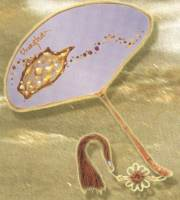

| Un éventail de Maître |
Taoyuan, Formose |
 A chaque fois que je regarde les peintures de Maître, je suis impressionnée par Son style naturel et libre qui va au-delà des limitations des artistes de ce monde. Chaque trait ou point, surtout sur Ses éventails est un travail de "super impressionnisme" en soi. Aucune langue de ce monde ne peut définir la profonde signification de Ses créations.
Un jour, alors que j'appréciais à nouveau ces peintures, j'ai fait une découverte extraordinaire sur l'éventail "La Voie Lactée". Avais-je déjà vu en rêve cette scène dessinée sur l'éventail, avant que je reçoive l'initiation ? Je me rappelle, j'étais assise seule sur une pierre, regardant la voie lactée, alors qu'une chanson résonnait à mes oreilles : "Une chanson dans la voie lactée". Je ne savais pas d'où venait la musique, mais la voix était indescriptiblement belle et résonnante. Quand je me suis réveillée, je me sentais très bien, spirituellement et physiquement. J'ai attrapé un crayon et j'ai essayé de capturer ce merveilleux moment dans un verset de poésie. Mais je ne pouvais trouver aucun mot pour le décrire. Maître m'a révélé à nouveau, la Voie Lactée dans de simples et brefs coups de pinceaux ! Merci beaucoup, Maître, d'avoir capturé dans Votre peinture, mon plus beau souvenir. Bien que je ne sois pas représentée dans cette peinture, je la chérirai néanmoins pour toujours.